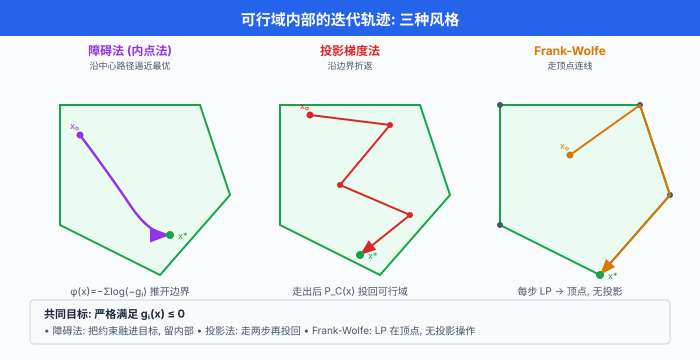
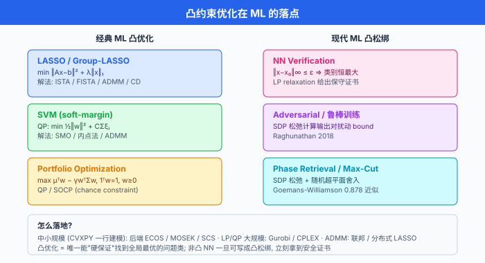

内点法与约束优化¶
一句话总结：约束优化的关键难题是"不能踩边界"；障碍法 (barrier method) 用 log 障碍把不等式融进目标，内点法从内部沿中心路径逼近最优，是 LP / SOCP / SDP 拿到多项式复杂度的核心武器。
上一节我们把无约束优化的曲率工具箱补齐了 —— 从教科书 Newton 到 K-FAC. 但现实世界的优化问题极少是无约束的：投资组合要求权重之和为 1 且非负，SVM 要求分类间隔大于 1，电力调度要求功率在设备上下限内。 约束一进来，"沿负梯度走"就不行了 —— 你会一头撞在可行域的墙上。 最直觉的想法是投影：走出去了就把它拉回来。 但投影往往比原问题还难算。 更聪明的思路是 —— 别让它跑出去. 障碍法在可行域边界筑起一道势垒：越靠近边界代价越高，越靠近无穷远代价越高。 参数从 "怕边界" 慢慢过渡到 "只关心原目标"，走出的轨迹就叫中心路径 (central path). Karmarkar 在 1984 年用这套思路把线性规划的复杂度从 Simplex 的最坏指数打到了多项式，是运筹学史上最漂亮的算法之一。 这一节我们从障碍法讲起，走完原始对偶内点法、CVXPY 生态、Frank-Wolfe 与 ADMM，把现代凸约束优化的整条工具链一次讲透.
- 上一节的 Newton、L-BFGS 都假设你可以在参数空间自由行走. 现在加一层围栏：\(g_i(x) \le 0\) (不等式约束) 与 \(h_j(x) = 0\) (等式约束). 一步走多了可能非法，走小了永远不到。
- 朴素方案是投影梯度 (projected gradient)：走一步梯度，撞墙就投影回来。 简单但对复杂约束投影本身就是难题。
- 障碍法换了思路：在目标里加一个"近边界惩罚"，让迭代天然不出界. 这是内点法 (interior point method, IPM) 的思想内核，也是 CVXPY 背后所有商业求解器的通用引擎。
约束优化难在哪¶
- 标准凸优化问题:
其中 \(f, g_i\) 凸，\(h_j\) 仿射。
- 一阶方法直接失败：沿 \(-\nabla f\) 走一步就可能违反 \(g_i(x) \le 0\). 修补选项:
- 投影：每步后把 \(x_{k+1}\) 拉回可行集 \(C\). 数学干净但 \(P_C\) 未必好算。
- 拉格朗日：引入 KKT 条件 \(\nabla f + \sum \lambda_i \nabla g_i + \sum \nu_j \nabla h_j = 0\)，联立求解。 概念清晰但 \(\lambda_i \ge 0\) 与互补松弛 \(\lambda_i g_i = 0\) 让方程非光滑。
-
障碍：把不等式 "融" 进目标，迭代天然待在严格内部. 这就是本节主角。
-
牛顿的自然扩展：无约束下 Newton 一步跨底。 加约束后，我们希望还能沿用 Newton 的二次收敛，只是每一步的方向要满足约束。 障碍法把这个想法数学化。

障碍法 / Log-barrier¶
- 核心思路：用一个内部无穷可微、边界发散的函数 \(\phi(x)\) 替代 \(g_i(x) \le 0\). 最经典的选择是对数障碍 (log barrier):
- 直觉:
- \(g_i(x) \ll 0\) (深入内部): \(-\log(-g_i)\) 很小，对目标干扰弱。
- \(g_i(x) \to 0^-\) (逼近边界): \(-\log(-g_i) \to +\infty\)，目标爆炸，迭代被"电栅栏"弹回。
- \(g_i(x) > 0\) (出界): \(\log\) 未定义，\(\phi = \infty\)，永远不发生。
-
屏障函数的凸性：每个 \(-\log(-g_i)\) 在 \(\{g_i < 0\}\) 上凸 (因 \(-\log\) 凸且 \(-g_i\) 凹的复合保凸). 所以 \(\phi\) 凸，与凸 \(f\) 相加仍凸。
-
把等式约束仍用消元或 KKT 处理，得到中心问题 (centering problem):
其中 \(t > 0\) 是权重。 当 \(t \to \infty\)，障碍项相对权重变小，最优解 \(x^*(t)\) 越来越接近原问题的最优 \(x^*\).
中心路径¶
-
参数 \(t\) 从小到大，\(x^*(t)\) 划出一条曲线 —— 这就是中心路径 (central path). 起点在可行域"重心"附近 (障碍主导)，终点是原问题最优 (障碍消失).
-
Boyd & Vandenberghe 的经典结果：中心路径上的次优度界为 $\(f(x^*(t)) - f^* \le \frac{m}{t}\)$ 即 \(t\) 每翻一倍，次优度减半。 想要 \(\epsilon\) 精度，需 \(t \ge m / \epsilon\).
-
算法框架:
- 初值 \(t_0\) (如 1) + 严格内点 \(x_0\) (Phase I 找).
- 用 Newton 法解中心问题，求出 \(x^*(t)\).
- 若 \(m/t \le \epsilon\) 停止；否则 \(t \leftarrow \mu t\) (\(\mu\) 常取 10 或 100)，用当前解做热启动回步骤 2.
-
输出 \(x^*(t)\).
-
收敛复杂度：每次外循环 \(t\) 乘 \(\mu\)，内 Newton 迭代次数 \(O(\sqrt{m})\) (self-concordance 理论下)，总共 \(O(\sqrt{m} \log(1/\epsilon))\) 次 Newton 步。 对 LP, \(m\) 是约束数，于是复杂度是 \(O(\sqrt{m} \log(1/\epsilon))\) —— 多项式，与问题规模只有次线性关系。
手写 log-barrier: QP 演示¶
- 用一个二次规划 (Quadratic Program, QP) 手写障碍法，感受一下。 问题:
import numpy as np
# 构造凸 QP: 目标 (1/2) x^T Q x + c^T x, 约束 Ax <= b
np.random.seed(0)
n, m = 5, 8
Q = np.eye(n) + 0.1 * np.random.randn(n, n)
Q = Q @ Q.T # 正定
c = np.random.randn(n)
A = np.random.randn(m, n)
b = np.abs(np.random.randn(m)) + 1 # 保证 x = 0 严格可行
def barrier(x, t):
g = A @ x - b # g_i(x) <= 0
if np.any(g >= 0):
return np.inf
return t * (0.5 * x @ Q @ x + c @ x) - np.sum(np.log(-g))
def barrier_grad(x, t):
g = A @ x - b # (m,)
return t * (Q @ x + c) + A.T @ (1 / (-g))
def barrier_hess(x, t):
g = A @ x - b
D = 1 / (g**2) # (m,)
return t * Q + (A * D[:, None]).T @ A
x = np.zeros(n) # 严格内点
t = 1.0
mu, tol = 10.0, 1e-8
print(f"{'t':>8} | {'iters':>5} | {'dual gap = m/t':>16} | {'f(x)':>10}")
while m / t > tol:
for k in range(50): # 内 Newton 循环
g_val = barrier_grad(x, t)
H_val = barrier_hess(x, t)
p = np.linalg.solve(H_val, g_val)
decrement = g_val @ p # Newton decrement
if decrement / 2 < 1e-10:
break
# 回溯线搜索, 保证 A(x + s p) < b
s = 1.0
while np.any(A @ (x - s * p) >= b):
s *= 0.5
x = x - s * p
print(f"{t:>8.2e} | {k:>5} | {m/t:>16.2e} | {0.5*x@Q@x + c@x:>10.6f}")
t *= mu
-
你会看到每次 \(t\) 乘 10, Newton 内循环只要 5-10 步就收敛，对偶间隙 \(m/t\) 指数衰减到 \(10^{-8}\) 只要 8-9 次外循环。 这就是内点法的效率。
-
实现要点:
- 必须严格内点起步 —— \(A x < b\) 严格成立。 找不到就先解一个"最大化余量"的辅助问题 (Phase I).
- 回溯线搜索保证 Newton 步不出界 —— 这是 barrier IPM 与无约束 Newton 唯一的实质区别。
- 热启动：每次 \(t\) 增大后，上一 \(t\) 的解就是新问题的极好初值 —— 这是内点法多项式复杂度的关键。
原始对偶内点法¶
-
原始对偶内点法 (primal-dual interior point method) 是现代 IPM 的主流实现，也是 MOSEK / Gurobi / ECOS 的引擎。 与纯障碍法相比，它同时更新原始变量 \(x\) 和对偶变量 \(\lambda, \nu\)，并且不严格追踪中心路径 —— 只在其邻域内游走，迭代更少。
-
原问题的 KKT 条件: $\(\nabla f(x) + \sum_i \lambda_i \nabla g_i(x) + \sum_j \nu_j \nabla h_j(x) = 0\)$ $\(g_i(x) \le 0, \; \lambda_i \ge 0, \; \lambda_i g_i(x) = 0 \quad \text{(互补松弛)}\)$ $\(h_j(x) = 0\)$
-
直接解 KKT 卡在互补松弛的非光滑性: \(\lambda_i g_i(x) = 0\) 是分段的。 内点法的天才一招是扰动 (perturb) 它:
-
直觉：让 \(\lambda_i\) 与 \(-g_i\) 的乘积等于一个小正数 \(\tau\)，光滑了非等号。 \(\tau \to 0\) 时逼近真正的互补松弛。
-
引入松弛变量 (slack) \(s_i = -g_i(x) > 0\)，完整的扰动 KKT 系统:
-
这是 \(n + m + m + p\) 个方程，未知量 \((x, s, \lambda, \nu)\) 恰好也是这个维度。 对每个 \(\tau\)，系统的解 \((x(\tau), s(\tau), \lambda(\tau), \nu(\tau))\) 存在且唯一，沿 \(\tau \to 0^+\) 收敛到原问题的 KKT 解。
-
Newton 步：对整个非线性系统做一次 Newton 迭代，每步解一个 \((n+m+m+p) \times (n+m+m+p)\) 的线性系统 (排列后可分块化简，只需解规约的 KKT 矩阵，尺寸约为 \(n \times n\)).
-
算法骨架:
- 初值 \((x_0, s_0, \lambda_0, \nu_0)\) 严格内部 (\(s_0 > 0\), \(\lambda_0 > 0\)).
- 中心化参数: \(\tau_k = \sigma \cdot \frac{\lambda_k^\top s_k}{m}\), \(\sigma \in (0, 1)\) 常取 0.1.
- Newton 步 \(\Delta = (\Delta x, \Delta s, \Delta \lambda, \Delta \nu)\) 解扰动 KKT.
- 步长：找最大 \(\alpha \in (0, 1]\) 使 \(s + \alpha \Delta s > 0\), \(\lambda + \alpha \Delta \lambda > 0\)，通常取 \(0.99 \alpha_{\max}\).
- 更新 \((x, s, \lambda, \nu) \leftarrow + \alpha \Delta\).
-
若原残差、对偶残差、对偶间隙 \(\lambda^\top s / m\) 都小于 \(\epsilon\)，停止。
-
优点:
- 不用严格待在中心路径上，只要在邻域内 —— 允许更激进的步长。
- 同时收敛原始与对偶 —— 得到明确的 primal-dual gap 作为停止判据。
- 多项式复杂度 \(O(\sqrt{n} \log(1/\epsilon))\) —— Nesterov-Nemirovski 的 self-concordant barrier 理论保证。
多项式复杂度与 Karmarkar 里程碑¶
- 1947 Dantzig 发明单纯形法 (Simplex) —— LP 的第一款实用算法，沿多面体顶点走。 Klee-Minty 1972 构造反例：单纯形在某些 LP 上最坏情形跑 \(2^n\) 步 —— 指数复杂度.
- 1979 Khachiyan 用椭球法首次给出 LP 的多项式算法 \(O(n^4 L)\) (\(L\) 是数据比特数)，理论破冰但实用性差。
- 1984 Karmarkar 发表 "A new polynomial-time algorithm for linear programming"，内点法首次登场：复杂度 \(O(n^{3.5} L)\)，且在实际大规模 LP 上比单纯形快。 论文引发运筹学圈震动，是 20 世纪算法史的里程碑。
- 后续 Nesterov & Nemirovski (1994) 建立 self-concordant barrier 理论，把 IPM 从 LP 推广到:
- 线性规划 (Linear Program, LP)：复杂度 \(O(\sqrt{n} \log(1/\epsilon))\).
- 二次规划 (Quadratic Program, QP)：目标含二次项，约束线性。
- 二次约束二次规划 (Quadratically Constrained QP, QCQP)：约束也含二次项。
- 二阶锥规划 (Second-Order Cone Program, SOCP)：约束是 \(\|A_i x + b_i\|_2 \le c_i^\top x + d_i\).
-
半正定规划 (Semidefinite Program, SDP)：变量是矩阵，约束 \(X \succeq 0\).
-
这套统一框架是 CVXPY / MOSEK / Gurobi 能"一个接口打天下"的数学基础。
-
单纯形 vs IPM 实战:
- 中小 LP (\(< 10^5\) 变量)：单纯形通常更快，且能返回顶点解 (稀疏).
- 大规模 LP (\(> 10^6\) 变量): IPM 胜出，迭代次数极稳定 (30-50 步).
- 热启动：单纯形支持 warm start (基改变), IPM 差得多 —— 这是求解参数化问题时单纯形的优势。
CVXPY 生态¶
- 手写 IPM 教学价值大，生产用建模语言 + 通用求解器. CVXPY (Diamond & Boyd, 2016, Stanford) 是 Python 生态的事实标准。
Disciplined Convex Programming (DCP)¶
- 用户按语法规则声明问题，CVXPY 验证凸性、翻译成求解器接口。 规则叫 DCP (Disciplined Convex Programming):
- 原子 (atoms) 都标了凸/凹属性 (
log凹，exp凸，norm凸，...). - 组合规则：凸函数的非负线性组合仍凸；凸函数的凸单调外层复合仍凸；等等。
-
用户写的表达式经 DCP 验证 —— 通过则保证凸，求解器一定收敛到全局最优；不通过则报错，提示改写。
-
好处：建模者只关心问题结构，不必手推对偶或写 KKT.
求解器生态¶
- CVXPY 是"前端"，后端调多个求解器:
- ECOS (Domahidi et al. 2013)：免费，内嵌小型 SOCP / LP，单文件 C 库，嵌入式友好。
- SCS (O'Donoghue 2016)：免费，用 ADMM + 稀疏矩阵，擅长大规模 SOCP / SDP.
- CLARABEL (Goulart & Chen 2024)：免费，Rust 写的新一代，支持指数锥。
- MOSEK：商业，极稳定，覆盖 LP / QP / SOCP / SDP / 指数锥 / 幂锥。
- Gurobi：商业，LP / QP / MIP 之王，IPM + Simplex 双引擎。
-
CPLEX：商业，老牌。
-
CVXPY 自动选合适求解器，也可手动
prob.solve(solver=cp.MOSEK).
CVXPY: LP + SOCP + SDP 三例¶
import cvxpy as cp
import numpy as np
# ==================== 1) LP: 生产计划 ====================
# max c^T x s.t. A x <= b, x >= 0
# 生产 3 种产品, 4 种资源约束
np.random.seed(0)
c_lp = np.array([3, 5, 4]) # 单位利润
A_lp = np.array([[2, 3, 1],
[4, 1, 2],
[1, 2, 3],
[1, 1, 1]]) # 资源消耗
b_lp = np.array([10, 15, 12, 8]) # 资源上限
x = cp.Variable(3, nonneg=True)
prob_lp = cp.Problem(cp.Maximize(c_lp @ x), [A_lp @ x <= b_lp])
prob_lp.solve()
print(f"[LP] 最大利润 = {prob_lp.value:.4f}")
print(f" 生产量 = {x.value}")
print(f" 求解器 = {prob_lp.solver_stats.solver_name}")
# ==================== 2) SOCP: 鲁棒线性回归 ====================
# min ||A x - b||_2 + gamma * ||x||_1
np.random.seed(1)
n, d = 100, 20
A = np.random.randn(n, d)
b = A @ np.random.randn(d) + 0.1 * np.random.randn(n)
gamma = 0.5
x = cp.Variable(d)
obj = cp.Minimize(cp.norm(A @ x - b, 2) + gamma * cp.norm(x, 1))
prob_socp = cp.Problem(obj)
prob_socp.solve()
print(f"\n[SOCP] 目标值 = {prob_socp.value:.4f}")
print(f" ||x||_1 = {np.sum(np.abs(x.value)):.4f}")
print(f" 非零数 = {np.sum(np.abs(x.value) > 1e-4)}")
# ==================== 3) SDP: 最大特征值最小化 ====================
# min lambda_max(A_0 + sum_i x_i A_i)
np.random.seed(2)
k = 5
n_sdp = 8
As = [np.random.randn(n_sdp, n_sdp) for _ in range(k + 1)]
As = [A + A.T for A in As] # 对称化
x = cp.Variable(k)
M = As[0] + sum(x[i] * As[i + 1] for i in range(k))
prob_sdp = cp.Problem(cp.Minimize(cp.lambda_max(M)))
prob_sdp.solve()
print(f"\n[SDP] 最小化后的 lambda_max = {prob_sdp.value:.4f}")
print(f" 系数 x = {x.value}")
-
三个问题，三种锥，一套接口。 CVXPY 自动识别是 LP / SOCP / SDP 并送到合适的求解器 —— DCP 的威力.
-
常见 ML 问题在 CVXPY 里都能三五行写完:
- LASSO:
cp.Minimize(cp.sum_squares(A @ x - b) + lam * cp.norm(x, 1)) - Ridge:
cp.Minimize(cp.sum_squares(A @ x - b) + lam * cp.sum_squares(x)) - Elastic Net：上二者加权。
- SVM soft-margin:
cp.Minimize(cp.sum_squares(w) + C * cp.sum(cp.pos(1 - y * (X @ w + b_)))) - Portfolio:
cp.Maximize(mu @ w - gamma * cp.quad_form(w, Sigma))s.t.cp.sum(w) == 1, w >= 0 - Chebyshev center (最大内接球)：用 SOCP.
典型问题类别一览¶
| 类别 | 形式 | 典型求解器 | ML 应用 |
|---|---|---|---|
| LP | 线性目标 + 线性约束 | Simplex / IPM | 网络流，LP 松弛，神经网络验证 |
| QP | 二次目标 + 线性约束 | Active-set / IPM | SVM soft-margin, MPC, portfolio |
| QCQP | 二次目标 + 二次约束 | IPM (SOCP-embeddable) | 信号处理，无线通信 |
| SOCP | 二阶锥约束 | IPM (ECOS/MOSEK) | 鲁棒回归，chance-constrained portfolio |
| SDP | LMI 约束 | IPM (SCS/MOSEK) | 图划分，相位恢复，神经网络鲁棒性 |
| 指数锥 | \(y e^{x/y} \le z\) | IPM (ECOS/SCS/MOSEK) | 最大熵，逻辑回归 |
| MIP | 变量含整数 | Gurobi / CPLEX | 神经网络验证 (精确) |
- 一条经验：若能写成 SOCP，一定不要写成 SDP (后者规模膨胀严重). 类似地，能写成 LP 就别写成 QP.
投影梯度：简单的替代方案¶
- 障碍法优雅但要写 barrier 函数。 更朴素的选择是投影梯度 (projected gradient):
其中 \(P_C(y) = \arg\min_{x \in C} \|x - y\|_2\) 是到可行集 \(C\) 的欧氏投影。
-
收敛性：若 \(f\) 凸且 \(L\)-光滑，投影梯度以 \(O(1/k)\) 收敛；强凸时 \(O((1 - 1/\kappa)^k)\) 线性收敛。 与无约束 GD 同阶。
-
痛点: \(P_C\) 未必好算。
- $C = $ 半空间 \(\{a^\top x \le b\}\): \(P_C\) 有闭式。
- $C = $ box \(\{l \le x \le u\}\)：逐坐标 clip，闭式。
- $C = $ 单纯形 \(\{x \ge 0, \mathbf{1}^\top x = 1\}\): \(O(n \log n)\) 排序算法。
- $C = $ L1 球 \(\{\|x\|_1 \le r\}\)：类似，\(O(n \log n)\).
-
$C = $ 一般多面体 \(\{Ax \le b\}\)：本身是个 QP —— 投影比原问题还难。
-
当投影廉价时，投影梯度是首选；复杂约束用障碍或 ADMM.
-
邻近梯度 (proximal gradient) 是投影梯度的推广：处理 \(\min f(x) + g(x)\), \(f\) 光滑 + \(g\) 简单非光滑 (如 \(\|x\|_1\)). 更新: $\(x_{k+1} = \text{prox}_{\eta g}\bigl(x_k - \eta \nabla f(x_k)\bigr)\)$
- \(\text{prox}_{\eta g}(y) = \arg\min_x \frac{1}{2\eta}\|x-y\|^2 + g(x)\). 对 \(g = \|\cdot\|_1\) 就是软阈值 (soft-threshold)，闭式。
- 这就是 ISTA (Iterative Shrinkage-Thresholding Algorithm), LASSO 的标准解法之一。 FISTA (Beck & Teboulle 2009) 加 Nesterov 加速，收敛率从 \(O(1/k)\) 到 \(O(1/k^2)\).
Frank-Wolfe / Conditional Gradient¶
-
若投影贵得离谱，但在 \(C\) 上做线性极小化很便宜，就该轮到 Frank-Wolfe (FW) 上场了。 这个算法叫条件梯度 (conditional gradient), 1956 年由 Frank & Wolfe 提出，用于二次规划，近年因大数据 ML (LASSO / matrix completion / structured SVM) 而复兴。
-
一步 FW 干两件事:
- 线性极小化 (LMO): \(s_k = \arg\min_{s \in C} \nabla f(x_k)^\top s\)
-
凸组合更新: \(x_{k+1} = (1 - \gamma_k) x_k + \gamma_k s_k\)
-
步长 \(\gamma_k\) 常取 \(\frac{2}{k+2}\) (Jaggi 2013) 或线搜索。
-
直觉: FW 在当前点做线性近似 \(\nabla f(x_k)^\top (s - x_k)\)，在 \(C\) 上找最"下坡"的顶点 \(s_k\)，然后沿 \(x_k \to s_k\) 方向走一小步。 因为 \(s_k \in C, x_k \in C, C\) 凸，凸组合 \(x_{k+1} \in C\) —— 天然不出界，不需要投影.
-
收敛率：凸 + Lipschitz 梯度下 \(O(1/k)\)，与投影梯度同阶。 强凸下仍 \(O(1/k)\) (原始 FW 达不到线性)，但 away-step / pairwise FW 变体可提升到线性。
-
明星应用:
- 约束 LASSO (\(\|x\|_1 \le r\) 而非罚项): LMO 就是选梯度分量最大的坐标，\(O(n)\).
- Matrix completion / nuclear norm ball (\(\|X\|_* \le r\)): LMO 是求 top-1 奇异对 (\(u_1 v_1^\top\))，用幂迭代 \(O(mn)\) —— 远比投影到核范数球 (需要完整 SVD) 便宜。
- Structured SVM: LMO 是"动态规划寻找最坏 label 序列".
- DeepMind / MSR 用 FW 做 Wasserstein 优化：传输多面体的 LMO 是 Hungarian 算法。
代码：Frank-Wolfe LASSO¶
- 约束 LASSO: \(\min_x \frac{1}{2}\|Ax - b\|^2\) s.t. \(\|x\|_1 \le r\).
- LMO 分析：\(\nabla f = A^\top (Ax - b) = g\), \(\min_{\|s\|_1 \le r} g^\top s\) 的最优是 \(s = -r \cdot \text{sign}(g_{i^*}) \cdot e_{i^*}\)，其中 \(i^* = \arg\max_i |g_i|\). 一步只更新一个坐标 —— 稀疏解自然涌现。
import numpy as np
import matplotlib.pyplot as plt
np.random.seed(0)
n, d = 200, 1000
A = np.random.randn(n, d)
x_true = np.zeros(d)
x_true[np.random.choice(d, 30, replace=False)] = np.random.randn(30)
b = A @ x_true + 0.01 * np.random.randn(n)
r = np.sum(np.abs(x_true)) * 1.05 # L1 半径
def frank_wolfe(A, b, r, n_iter=500):
x = np.zeros(A.shape[1])
history = []
for k in range(n_iter):
g = A.T @ (A @ x - b) # 梯度
i_star = np.argmax(np.abs(g)) # LMO: 挑绝对值最大的坐标
s = np.zeros_like(x)
s[i_star] = -r * np.sign(g[i_star])
gamma = 2 / (k + 2) # 步长
x = (1 - gamma) * x + gamma * s
history.append(0.5 * np.sum((A @ x - b)**2))
return x, history
x_fw, hist = frank_wolfe(A, b, r, n_iter=500)
print(f"FW: 目标值 = {hist[-1]:.4f}")
print(f" 支持集大小 = {np.sum(np.abs(x_fw) > 1e-4)}")
print(f" ||x||_1 = {np.sum(np.abs(x_fw)):.4f}, r = {r:.4f}")
-
观察：每步 LMO 只 \(O(nd)\) 的一次矩阵-向量乘，完全避开了对 L1 球的投影 (虽然此例投影也不难，但对核范数球差异巨大). 500 步内目标下降到接近最优，且解自然稀疏 —— 第 \(k\) 步支持集至多 \(k\) 个元素。
-
注意 FW 的一个短板：收敛慢 (原始 FW 是 \(O(1/k)\))，且 zig-zag 现象严重 (贴近顶点时来回摆). Away-step FW 或 pairwise FW 修补此缺陷。
ADMM：交替方向乘子法¶
- ADMM (Alternating Direction Method of Multipliers，交替方向乘子法) 是 1970s 提出、2011 年 Boyd 综述后席卷 ML 界的经典算法。 特别擅长目标可分裂 + 约束通过等式相连的问题:
-
增广拉格朗日 (augmented Lagrangian): $\(L_\rho(x, z, u) = f(x) + g(z) + u^\top (A x + B z - c) + \frac{\rho}{2}\|A x + B z - c\|^2\)$
-
ADMM 三步循环:
-
前两行是交替最小化 \(x\) 和 \(z\) (故名 "alternating direction")，第三行是对偶变量上升 (拉格朗日乘子更新).
-
威力所在：若 \(f, g\) 各自的邻近算子 (prox) 好算，ADMM 就能把原本耦合的复杂问题拆成两个简单的子问题。 分布式 / 并行天然。
ADMM LASSO¶
- 经典改写：\(\min \frac{1}{2}\|Ax - b\|^2 + \lambda \|z\|_1\) s.t. \(x - z = 0\).
- \(x\) 更新：二次问题，闭式 \(x^{k+1} = (A^\top A + \rho I)^{-1} (A^\top b + \rho (z^k - u^k))\). 矩阵求逆只做一次 (缓存 Cholesky).
- \(z\) 更新：软阈值 \(z^{k+1} = S_{\lambda/\rho}(x^{k+1} + u^k)\)，逐元素闭式。
- \(u\) 更新：一次加法。
import numpy as np
def soft_threshold(v, kappa):
return np.sign(v) * np.maximum(np.abs(v) - kappa, 0)
def admm_lasso(A, b, lam, rho=1.0, n_iter=200, tol=1e-6):
n, d = A.shape
# 预分解: 二次子问题的系数矩阵 A^T A + rho I 一直不变
AtA = A.T @ A
Atb = A.T @ b
L = np.linalg.cholesky(AtA + rho * np.eye(d))
x, z, u = np.zeros(d), np.zeros(d), np.zeros(d)
history = []
for k in range(n_iter):
# x 更新: 求解 (A^T A + rho I) x = A^T b + rho (z - u)
rhs = Atb + rho * (z - u)
x = np.linalg.solve(L.T, np.linalg.solve(L, rhs))
# z 更新: 软阈值
z_old = z.copy()
z = soft_threshold(x + u, lam / rho)
# u 更新
u = u + x - z
# 目标 + 残差
obj = 0.5 * np.sum((A @ x - b)**2) + lam * np.sum(np.abs(z))
r_pri = np.linalg.norm(x - z)
r_dual = rho * np.linalg.norm(z - z_old)
history.append(obj)
if r_pri < tol and r_dual < tol:
print(f"ADMM 收敛于第 {k} 步")
break
return z, history
np.random.seed(0)
n, d = 200, 500
A = np.random.randn(n, d)
x_true = np.zeros(d)
x_true[np.random.choice(d, 20, replace=False)] = np.random.randn(20)
b = A @ x_true + 0.01 * np.random.randn(n)
x_admm, hist = admm_lasso(A, b, lam=0.5)
print(f"ADMM LASSO: 目标 = {hist[-1]:.4f}")
print(f" 非零数 = {np.sum(np.abs(x_admm) > 1e-4)}")
-
ADMM 的收敛性: \(f, g\) 凸 + 强对偶 → \(O(1/k)\) 收敛。 强凸 + 光滑下可加速到线性。 实操是极稳健的 —— 对 \(\rho\) 不太敏感，通常几十到几百步就够。 缺点是精度 \(10^{-8}\) 以上要跑很久，高精度不如 IPM.
-
分布式 ADMM：若 \(f(x) = \sum_i f_i(x_i)\) 可加，每个 \(f_i\) 的 \(x\) 更新独立并行，集中的只有 \(z\) 与 \(u\). 这是联邦学习 / 分布式 LASSO 的算法内核 —— Ch06/05 已经从系统视角提过，这里给出优化视角的对应。
-
共识 ADMM (Consensus ADMM): \(\min \sum_i f_i(x_i)\) s.t. \(x_i = z\) 强迫所有本地 \(x_i\) 达成一致。 每 worker 本地训练，服务端聚合 —— 就是 FedAvg 的凸优化祖先。
在 ML 中的应用大观¶

- LASSO / Group LASSO：稀疏回归。 解法：ISTA/FISTA (proximal gradient), ADMM, coordinate descent, FW (若用约束形式).
- SVM soft-margin: QP, dual form 是 box-QP. 解法：SMO (Platt 1998)，内点法，ADMM.
- Portfolio optimization: \(\max \mu^\top w - \gamma w^\top \Sigma w\) s.t. \(\mathbf{1}^\top w = 1, w \ge 0\). QP. 若加 chance constraint (概率约束)，变 SOCP.
- 神经网络验证 (Neural Network Verification)：给定输入扰动集 \(\|x - x_0\|_\infty \le \epsilon\)，验证是否某类别恒最大。 精确解需 MIP; LP 松弛 (Ehlers 2017, Wong & Kolter 2018) 用凸 relaxation 快速给出保守证书。
- 鲁棒训练 via SDP (Raghunathan et al. 2018)：用 SDP 松弛计算神经网络输出对输入扰动的鲁棒 bound，作为训练目标的一部分。
- 相位恢复 (Phase retrieval): SDP 松弛 (Candès et al. 2013 PhaseLift)，后被 Wirtinger flow 一阶方法取代但概念根植 SDP.
- 图划分 / max-cut: Goemans-Williamson 1995 用 SDP 松弛 + 随机 hyperplane 舍入，得 0.878 近似比 —— 组合优化的里程碑。
何时用哪个?¶
- 中小凸问题，目标 + 约束都能 CVXPY 建模：直接 CVXPY，后端 ECOS/MOSEK. 一行
prob.solve(). - LP / QP 且规模较大: Gurobi / CPLEX / MOSEK (直接 API).
- 投影廉价：投影梯度 / FISTA. 简单、内存小。
- 投影贵但线性极小化廉价: Frank-Wolfe. 稀疏 / 低秩解天然。
- 目标可拆分 (光滑 + 非光滑，或和的形式): ADMM. 分布式友好，中等精度快。
- 超大规模 (billions) + 非凸 (DL)：一阶 SGD / Adam 仍是王道；约束通过投影或 penalty 近似，二阶信息用 K-FAC/Shampoo. IPM 完全不适用。
参考文献¶
- Boyd, S., & Vandenberghe, L. Convex Optimization. Cambridge University Press, 2004. 第 11 章内点法，全书凸优化的圣经。 免费 PDF: https://web.stanford.edu/~boyd/cvxbook/
- Nocedal, J., & Wright, S. J. Numerical Optimization (2nd ed.). Springer, 2006. 第 14-19 章覆盖 LP/QP/SQP/内点法工程细节。
- Karmarkar, N. "A New Polynomial-Time Algorithm for Linear Programming". Combinatorica, 4(4): 373-395, 1984. 内点法开山之作。
- Nesterov, Y., & Nemirovski, A. Interior-Point Polynomial Algorithms in Convex Programming. SIAM, 1994. Self-concordant barrier 的理论专著。
- Frank, M., & Wolfe, P. "An Algorithm for Quadratic Programming". Naval Research Logistics Quarterly, 3(1-2): 95-110, 1956. Frank-Wolfe 首篇。
- Jaggi, M. "Revisiting Frank-Wolfe: Projection-Free Sparse Convex Optimization". ICML 2013. FW 在大数据 ML 中的复兴。
- Boyd, S., Parikh, N., Chu, E., Peleato, B., & Eckstein, J. "Distributed Optimization and Statistical Learning via the Alternating Direction Method of Multipliers". Foundations and Trends in Machine Learning, 3(1): 1-122, 2011. ADMM 综述，引用数破 30k，现代 ADMM 的旗帜。
- Beck, A., & Teboulle, M. "A Fast Iterative Shrinkage-Thresholding Algorithm for Linear Inverse Problems". SIAM Journal on Imaging Sciences, 2(1): 183-202, 2009. FISTA 论文。
- Diamond, S., & Boyd, S. "CVXPY: A Python-Embedded Modeling Language for Convex Optimization". Journal of Machine Learning Research, 17(83): 1-5, 2016. CVXPY 官方论文。
- Domahidi, A., Chu, E., & Boyd, S. "ECOS: An SOCP Solver for Embedded Systems". European Control Conference, 2013. ECOS 求解器。
- O'Donoghue, B., Chu, E., Parikh, N., & Boyd, S. "Conic Optimization via Operator Splitting and Homogeneous Self-Dual Embedding". Journal of Optimization Theory and Applications, 169(3): 1042-1068, 2016. SCS 求解器。
- Parikh, N., & Boyd, S. "Proximal Algorithms". Foundations and Trends in Optimization, 1(3): 127-239, 2014. 近端算法综述。
- Wong, E., & Kolter, Z. "Provable Defenses against Adversarial Examples via the Convex Outer Adversarial Polytope". ICML 2018. LP 松弛做神经网络鲁棒性证书。
- Raghunathan, A., Steinhardt, J., & Liang, P. "Certified Defenses against Adversarial Examples". ICLR 2018. SDP 松弛用于神经网络。
- Goemans, M. X., & Williamson, D. P. "Improved Approximation Algorithms for Maximum Cut and Satisfiability Problems Using Semidefinite Programming". Journal of the ACM, 42(6): 1115-1145, 1995. SDP 松弛在组合优化的里程碑。
📌 本节要点¶
- 障碍法核心：用 \(\phi(x) = -\sum \log(-g_i(x))\) 把不等式约束融进目标，求解 \(\min t f(x) + \phi(x)\) 并让 \(t \to \infty\)；迭代天然待在严格内部，走出中心路径 \(x^*(t)\).
- 原始对偶内点法：同时更新 \((x, s, \lambda, \nu)\)，对扰动 KKT 系统 \(\lambda_i s_i = \tau, \tau \to 0\) 做 Newton 步。 是 ECOS / MOSEK / Gurobi 的引擎。
- 多项式复杂度 \(O(\sqrt{n} \log(1/\epsilon))\): Karmarkar 1984 里程碑，Nesterov-Nemirovski self-concordant barrier 理论把 IPM 推广到 LP/QP/SOCP/SDP 全族。
- CVXPY + DCP：用户按凸性规则声明问题，CVXPY 自动翻译到 ECOS/SCS/MOSEK. LASSO/SVM/portfolio 五行搞定，ML 建模者的通用工具。
- 投影梯度 \(x_{k+1} = P_C(x_k - \eta \nabla f)\)：投影廉价时首选；邻近梯度 (FISTA/ISTA) 是它对 "光滑 + 非光滑" 的推广，LASSO 标准解法。
- Frank-Wolfe \(s_k = \arg\min_{s \in C} \nabla f(x_k)^\top s\)：用线性极小化替代投影，天然产生稀疏 / 低秩解。 明星应用：约束 LASSO、matrix completion、structured SVM.
- ADMM 三步: \(x\) 最小化增广拉格朗日 → \(z\) 最小化 → \(u\) 对偶上升。 Boyd 2011 综述引燃现代 ML 分布式优化的算法基础，LASSO / consensus 的通用引擎。
- ML 落点全景: LASSO / Group LASSO (ADMM/FISTA/FW), SVM (QP), portfolio (QP/SOCP), NN verification (LP 松弛)，鲁棒训练 (SDP 松弛), max-cut (SDP + 舍入). 凸约束优化把 "写公式" 变成 "调 solver".
下一节我们进入自动微分与反向传播的实现层 —— 有了梯度、Hessian、约束求解的全套数学工具，我们回到"这些梯度到底是怎么被程序算出来的"这个工程根问题，走完从计算图到反向模式 AD 再到 JAX/PyTorch autograd 的完整脉络.